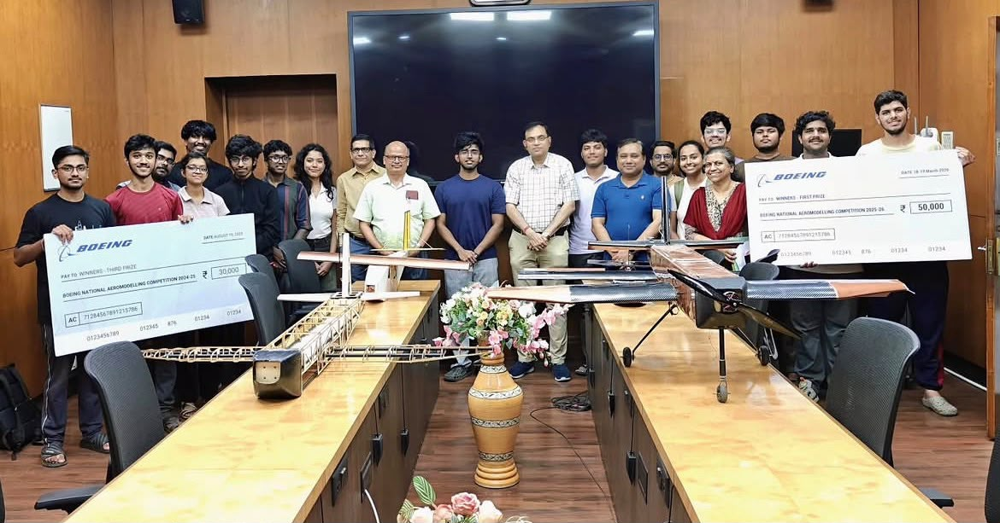

Completed · Boeing 1st Prize

PROJECT 01 · GROUP PROJECT · IIT KGP
Fixed-Wing UAV with Payload Deployment
Designed and fabricated a remote-controlled fixed-wing aircraft with an integrated, servo-actuated payload-release mechanism for controlled mid-air deployment. Built the CAD airframe, tuned centre-of-gravity and wing loading for stable flight, and ran full flight testing — winning First Prize at the Boeing Zonals.
AerodynamicsSolidWorks CADRC SystemsPayload DropFlight Testing
1stBoeing Zonals
₹50KCash Prize